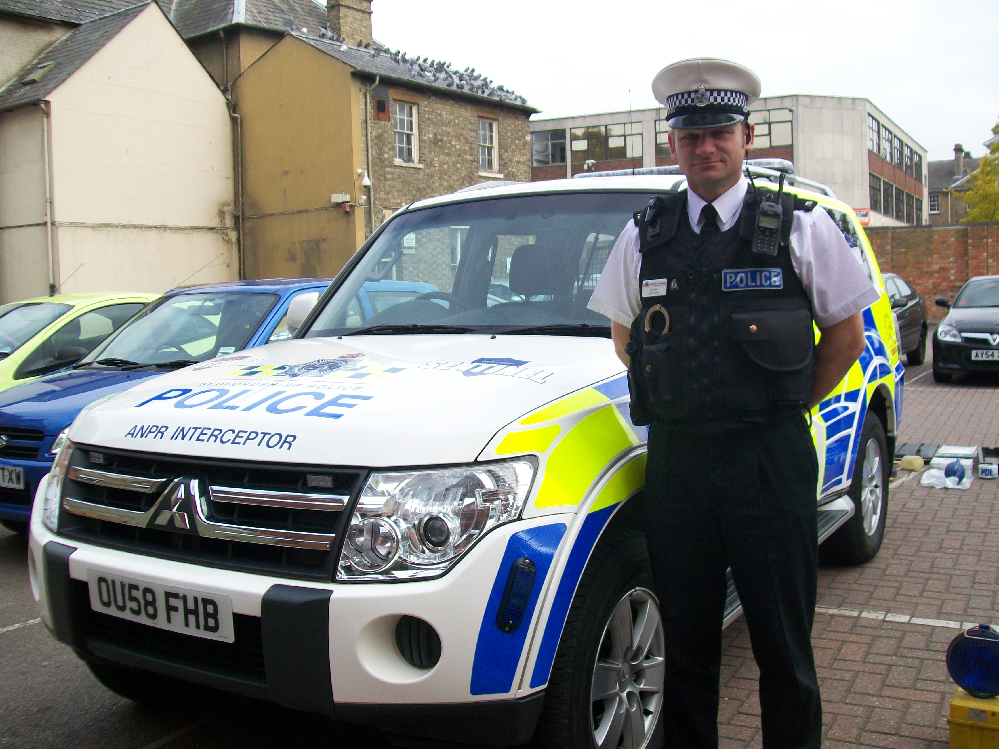

So how did I plan my interview
So I'll talk about my old role and this role. Okay so in my old role each police officer has a personalised laptop that they're given by the police force and you use that to record crimes that you go to. you use that to take statements, you will use it to input intelligence into the system emails obviously through to different departments different police officers victims of crime people you need to communicate with. it's all running through your laptop or computer system that you're given by the force so that's sort of what you utilise it for on Frontline policing.
What are the main advantages of using a computer in the police force?
They did yeah so when I when I joined nine years ago they were just transitioning into using laptops more but when I first joined we were still taking statements handwritten so if you were a victim of crime I'd come so let's say you had been burgled I'd come I'd sit down with you I get all the information from you and then I would sit there with a pen and I would write what you're telling me yeah if I went wrong obviously I'd have to start again or cross it out get you to sign it to say that I've crossed it out and then carry on now with laptops when you go to a crime scene you have a proforma sort of on the document on your computer and you basically type their statement so it's a lot quicker it's easy to say if you make a mistake it's easier to rectify and we have a system where we then get the victim to sign the screen so they're still putting their signature to the statement that they've made but it's all electronic and then obviously things don't get missing as much they don't get wet or damage so if I'm somewhere and I'm outside And Dragon software is what we use for people that maybe have dyslexia so there maybe they're typing skills on as as good as somebody that doesn't have dyslexia they're spelling and things like that so instead of them having to type things they have a headset and they will talk into the microphone and the computer will type what they're saying which again is a benefit for some people and now there's light detector so you can see them if they're lying as well yeah so we don't please don't use lie detectors sort of on a normal day-to-day basis it's something that can be utilized in different departments but it's something that it's not it's not a regular current in the place to use lie detectors
The computer does the opposite of making people safe I think technology is dangerous it can be dangerous if used in the wrong way but obviously the police use it in the right way we use it to help victims we use it to you know help safeguard people give people the right information but yeah it can be dangerous if it's in the wrong hands or it's used in the wrong way
What is the best advice on using computerised technology?
I mean obviously always have some sort of software antivirus software which will you know protect you to a certain amount educate yourself on spam fishing emails junk you know all the all the things that sometimes people get tricked into clicking on and it causes in a big problem I'm not massively technical I don't know lots about technology but you know I know the basics and I think everybody should you know be aware enough to know the basics of simple technology and how to sort of stay out of trouble and also no days most people who gets ground are pushing me their elder or the people from migrants because they don't know how to use the technology the best so do you think like adding a like a free lesson to help them do better prevent scamming yeah definitely I think I have seen some some places like local libraries and local councils and stuff sometimes do put on groups or sessions for the people to attend to learn the basics about you know scamming and things I know Bedfordshire police our community teams work closely where we can with people to educate them as best as we can like you say the elderly are susceptible to it more because they didn't grow up with technology so it's coming into their life at the latest stages of their life so a lot of them just believe everything that they see on technology in technology and an email they'll click on a link without really thinking about what the causes could be of it so yeah I think these lessons would be really beneficial especially to those sort of that are able to be and that have maybe come into the country that haven't had the use of technology before in school they love lessons on scamminks ever since CF3 when I was here I don't remember that the website it was a good website
This is one I saw this struggled to think I mean I've been involved with sort of indecent images of children and things like that you know where children of had photographs taken of the where they shouldn't have and they've been shared and I've had to deal with with the person that was caught doing that I have been to jobs where elderly people have been scammed I went to warm where the someone was I think they'd sent her an email and she'd replied or clicked on the email because they told her that there was a problem with her windows the computer system windows and they'd asked her to type something into a website and that then gave them access to her computer so they were controlling her computer while she was sat there looking and they were able to look at all our passwords they got into a banking and things like that so again she hadn't been educated so I had to go and take details and you know try and help her where I could and sort of help her contact her bank and things like that to make them aware that she'd been been scanned so that's probably the worst one because it affected once you realize she had been scammed I could see that she was really upset by it also together find scammer I didn't but I put all the information I had and all the evidence that she'd given me together and I passed that onto our cyber team and they would have continued that investigation and hopefully they would have found the corporate who was trying to do the scum and we should probably also try to prevent them if they're coming from different countries yeah and this is this is the thing we technology it doesn't have to be somebody down the road or committing the crime in the same town as you it could be from somebody thousands of miles away and that makes it difficult because then obviously the the British police have to contact say the Japanese police or the American and there has to be that sort of cooperative working to say look we've got a victim in the UK we've trapped it that the offender is in America please can you go and do this for us and you know there's a lot of parts that have to fit together to be able to catch the the people and this is why for our safest security test they have to be 100% secure whatever one's wants their success of once they can contain everything and use it but unfortunately you can never be 100% secure it's like a burglar you may put everything Windows glasses gas but they still come somehow yeah
To Summarise this interview went very well and I learned a lot of knowledge of the police force and what are the advantages and disadvantages of computerised technology and some of the solutions to the disadvantages.
However I unfortunately I did not get all my questions answered because this police officer was very honest but did gave me an email to email them so that they can give me the answers to my questions that were not question
the only problem was not all my questions were answered but they will be answered shortly from this email customersupport@beds.police.uk to get my answer
How could I make the interview better?
I think there is no change that I will make if I had an interview with a police officer again.
I will use this data to write each section on what are the advantages,disadvantages and the possible solution to this EPQ project.
1.I did my research on what question I would like to find out and made an ethical summary and asked my supervisors to look at my questions.
2.I had to use people I know to contact the police officer
3.We decide on a time
4.The interview went
5.Here are my results and how I did my interview
In this interview I would like to gain some more information on the advantages and disadvantages of computerised technology and the possible solutions to stop these disadvantages. This will help me gain more information about what the advantages and disadvantages of computerised technology are in the police force, and to see if old computerised technology affects the police force efficiency
Ethical summary:
Once the data has been collected the recording will be deleted. Do you consent to voice audio recording?
All responses used in the project will be anonymised
You have the right to withdraw or change your responses up until 2 weeks after the interview.
Do you still wish to proceed, thank you.
Questions
Response
What is your job and describe your role please?
I'm a police constable for Bedfordshire police I've been a police constable for nine years the first six years I was a Frontline police officer so dealing with the 999 calls going on blue lights and dealing with whatever was in front of me and for the last three years I've been in the recruitment team so I come into schools colleges public events and attract and engage the next generation of police officers to join us.
What is a police constable?
yeah so that is one of the ranks of policing so when you join policing you start as a police constable and then if you gain promotion you become a sergeant and then an inspector chief inspector superintendent chief superintendent and then it goes even higher than that so Constable is the lowest rank of the peace officer you can be like the military the army I'm forces they have rank system the police of the design can anyone work there yep everybody that joins the police joins as a police constable and then you can either do different roles as a piece Constable so there's different teams you can join so you could become a detective you can work Frontline policing community policing recruitment intelligent or you can gain promotion and become a sergeant inspector and do the same role but sort of in a management level thank you the next question is
How do computers help you in your job?
In my role now I use it a lot for emails like emailing yourself, contacting yourself but arranging things. I do a lot of Attraction engagement things online so Microsoft teams we use a lot for holding events where people from the public can use the link to log in and we can then present different things for them on Microsoft teams and give them information. That way I will see you use PowerPoints when I come into schools and colleges. I'll have a PowerPoint presentation and I'll use that through my computer to present to the students and the people that I'm trying to talk to .
How have they helped you?
Do you feel the computer does the opposite of making people safe?
What is the worst case scenario involving computers you have ever had in this job?
Do you feel this benefits the police force?
I think using computers in the police is a benefit I definitely think it has sped processes up helped police officers do the job better and quicker and also given us more tools to be able to support the victims that we're dealing with and also do you think that you can use it much more efficiently when it works in like if you would add a even better if would you add to the computers for I don't know if I want to I think there's always going to be use new software new computer programs that come in that make things quicker make things easier and I just think it's a case of police forces being up to date with things and being aware of new things that are coming in and maybe trial in it to see if it does help does work I know it all cost money and this is the problem peaceful just have budget so sometimes they're not able to get the newest technology because it just costs too much money do you think
Do you think it is ethical to use cameras and fingerprints?
it is ethical to use so we have like a piece of technology it's called mobile ID where we can fingerprint somebody on the street and it sends their fingerprints off via sort of technology to a database and within a few seconds it will come back and tell us if that person has been arrested before and they've given us their fingerprints it will be able to identify them and it will show us a picture of them so that we can then see if they are telling us who they really are so it does work I've used it on the streets when I've sort of stopped someone on the street that was acting suspiciously in the middle of the night I've asked them for their details they've given me their details so just to confirm it was them and they weren't given me false details and because maybe they were wanted burglar or they were up to no good and they didn't want me to know who they were I fingerprinted them and it came back that they were the person that they told me so in that in that sense you know I've used it ethically I've used it for the right reasons obviously it can be misused and that's when it becomes unethical but as long as you're using it how it should be used then yeah I think that it's definitely a tool that is good for the police and you know for the police force are there cameras and walkie talkies yeah in the thing and how good are they so the cameras I think are really good again when I joined they were just being introduced but I've spoken to police officers that didn't have them before and it's to protect the police officer and the member of public that their dealing with because obviously if the camera is on the police officer has to act professionally and do what they should be doing make sure they're doing everything lawful which then protects the member of public but on the other hand if the member of public makes complaint to say that that police officer was rude to them racist sexist whatever it might be and they make an allegation against that police officer that camera can't lie so if that piece officer has been then the evidence is there but if that officer hasn't been and it's a false allegation then that camera protects the police officer just as much as it protects the member of public before them it was very much one person's word against another and you know that's a ways quite dangerous thing isn't it but that camera evidence really does help
Does the advantage beat the disadvantage of using cameras and fingerprints?
yeah definitely without a doubt the like I say the camera situation it protects everybody involved because as soon as you as soon as you get to a job and you start dealing with something you turn that camera on it's the lens in it it's like a eye lens so it gets a good span of the area as well so and it's got a microphone as well so you can see and hear everything that's going on which is never about thing because it means that the police officers have to do the right thing and acting the right way and it also is reassuring the public that you know it's all being recorded and anything that sort of warrants then to complain will be recorded and been able to look for as evidence so yeah I definitely think it's a good thing that we have them and it's more an advantage than a disadvantage and also do you have the access to all cameras like in the streets because there's many incidents that you have to do someone's camera to see what happened so the CCTV that started around the His Own by the council the police have access to we work closely with the council week work closely with the CCTV operators so in the town centre let's say somebody still something from one of the shops in the town centre let's say B&m in the town centre and they run out that shop and all the town center have radios to the control room so they can call up and say somebody is just run out the shop the six foot blonde hair wearing a red red bomber jacket so
Does it make the police lackadaisical, less cautious using computers and not making the police standing firm?
I don't think so I think if you asked any police officer they do what they do because they enjoy it and they're passionate about helping people I think technology and computers has just helped us to help people and investigate crime and fight crime more I don't think it's made police officers lackadaisical or lazy or you know I genuinely think that any police officer you speak to would see as an advantage to have the computers and it just makes it their job easier but they're still doing the same job probably to a higher standard because the computers are helping them and do you think they may rely on the computer's team much I don't think so because if the computer is broke down and the technology dropped out for whatever reason then we would just go back to pen and paper right in the statement that way if you can't email somebody because the emails are down you pick up a phone and you speak to them on the phone so I don't think it I don't think it's all makes has made them lazy I just think that it's the way the world's going but sometimes technology breaks down and we have other methods we can use if that happens
What is the ratio of old to new computers ?
So I would say there are still a few old computers floating around but most most of the computers have been updated I would say in the last three years like I every police officer has their own laptop and I'd say probably every three or four years that you're given a new laptop with better software that runs quicker so I would say that 90 85% of pepper please computers are sort of quite current and up to date there'll be a few that are maybe need a bit of updated and good it'd be I'd like this we have got a few standard and computers like that but most people will use their own laptop and we have docking stations where you just plug it a plug into the side and then it will project onto a screen so we have lots of Dock stations and screens we don't have many stand alone computers so there's now a lot of portable devices yeah definitely
Does the computer make society more secure and help the police force or does it make the police force's job easier?
I think we know the answer to this but does the computer make Society makes ir secure and help the police force and does it make the police force job easier again I think it's a yes it can make Society more secure technology is brilliant when it works and when it's used right but you see it on the news big companies and end up getting hacked and lots of people's details can be into the wrong hands doesn't happen very often and when it does happen they're quite good at trying to recover the information as quickly as they can and tell the people of been affected so I'd say mostly yes it's a good thing and it is a secure thing and does it make the police forces job easier again it's yes and no yes because when we use technology to our advantages it helps us investigate crime better but we get a lot more crime that his cyber-related which means there's more investigations for us to do because cyber crime is rising so again yes it makes our job easier when we are using the technology but no the technology if it's using the wrong way increases the crime reports that we have to deal with and was the best way to but then the sidebar crimes education is big I think just educating you know children from a young age are growing up with computers to know the you know the good computers and technology brings but also the bad side of it as well and what problems it can bring but then also like you know people like myself I'm I grew up with technology but not the technology that you are growing up with now and people older than me didn't go out of technology they've technologies become part of their life when they're adults so again I think it's just about educating those people of the dangers around it and obviously the clever people that can build new programs and firewalls and virus detectors and things like that obviously the better they become the more secure technology will be for people it's very interesting you know because I was fought by it I just saw one actually get access to the computer is it blows my mind I like to say I I'm okay with technology but you know the whole system hacking and you know the dark Web and all it just it blows my mind as to you know where how it all works and how people get access to and a couple coding as well kodia is another thing that just to me it's just numbers but yeah it's a very good it is yeah
What is the percentage of the increase of computerised technology?
it must be Refine whereas now every piece officer has a laptop every police officer has a smartphone that is work for work and that he's across the whole of Bedfordshire so I would say yeah maybe when I joined 40% 50% of officers had technology at their fingertips and now I would say it's definitely 100%
What have they done to overcome the issue of cyber attacks?
so they've increased the cyber security team they've educated officers as to you know not click on spam emails and report them we've got a function on our email is where if an email comes to and we're not sure if it's something we should be opening and there's a function where we can just report it to the the Cyber team and they were look into it so that we don't accidentally open anything that's going to cause another sort of cyber attack that so they put extra processes in place and also just educating officers because like I say there's some offices that are older that aren't aware of how dangerous technology can be so it's just about educating the officers to make sure that their vigilant with with things that they're doing on the laptops
Is it true most of the disadvantages could easily be treated if we somehow stop the desires, such as stopping them from misusing. Most of the time people are either misused for their own intentions(desires)?
The branches could easily be treated if Yeah definitely again there are police officers that misuse the systems gather gather information to pass on and when they obviously shouldn't be doing that or they're looking at information for their own gain that's got nothing to do with the technology that's the person that's using it and it's just about getting those people finding them catching them and reporting them and getting them out of out of sort of the position they're in to be able to misuse that information and the technology that's given to them but yeah definitely the technologies there and it's good that it's there but obviously you get people that want to use it for the wrong reasons and that's that's where you need to sort of be able to get them out of the police force and this is off Topic but desireds player really huge role in creating crying for the suspect criminal would you agree yeah I think there's different types of criminals some criminals are out for personal gain some criminals are out to her others some criminals are out to just survive so you know people with addictions and things like that they commit crime because they have to survive survive get their next hit the drugs or be able to go and you know buy something to eat or you know still some clothing to keep warm because they haven't got home to to go to so there's different types of criminals and their desires or maybe different and but whatever that desire is would drive them so yes some people will desire to hurt people and climb to the top of a pecking order if you like a chain of food chain so that's their Desire so they'll step on anybody they can to get there other people's desires are just to survive and they might have to commit crime to do that so yeah and people who do drugs properly Started From early ages as well potentially not always sometimes people lose their jobs their mental health suffers and things just spiral from there you know I've had to deal with people in the past that have had really good jobs family house you know and living the what were you would say is a normal healthy life they've lost their job they can't pay the bills they split up with their partner and their only answer then is maybe drugs to ease the pain or drink to ease the pain and sort of go into a place where they forget about life he's got what's going on around them so yes so not always start from an early age it can it cancel hit you at any point in life and also as watching this film I mean this other program and this person was trying to go jail yes he said he was homeless person and he's trying to make the police angry and they never put him somewhere else I've done that before when I was Frontline police in I was called to a shoplifter in the town centre and when I got there he hadn't tried to run away he was sat on the bench outside the shop with loads of clothes that just stolen from the shop so I went and spoke to the shop they said yeah he's stolen that stuff about £200 worth of stuff so I then went out and spoke to him arrested him for the theft and whilst I was talking to he said I've only just been released from prison today and I said why are you committing crime he said because I want to go back so yeah people do people do want to be prison because they feel safer or they get fed they've got a roof over their head so yeah there's there are people out there that sadly I feel that they're life is better if they're in prison and what do you think we form their best I mean there are programs that you can put them on when they come out there's obviously stuff they can do inside prison to learn new Call the Education and everything that you but if they leave prison and they don't want to do it then you can't force them so a lot of it is that their own mind and letting them make the decision as an adult and this may be off Topic but is it true that the majority are missing so when they come out they become better people I would like because there's been lots of videos of people that converting to wrestling recently my religion and he said that gives them peace make some better person you can see them outside like Mike Tyson yeah I might well be if you've seen reports on it but I wouldn't I wouldn't know whether that's right or not but if it is something that people are turning to and he's helping them then it can only be a good thing
What percentage of cyber attacks changed during the year?
Again looking at the next few questions I'm probably not going to be able to answer them because I haven't got the data available the potentially ones that you'll be able to get the information from if you contact the customer service team and ask for it that way just explain why you want it and the fact that you're sort of doing a project in your studying it they might be able to help you but it's not something that I know of the top of my head I'm afraid
How up to date are the computers in the Bedfordshire police force?
How up today are the computers in the Bedfordshire police force I would say most of our laptops are probably two years old or newer we are quite good it costs a lot of money to upgrade the systems you think how many police officers and police staff have computers it costs and thousands of pounds for the Peaceful to update them so we don't update them every year but I would say every two to three years officers will get new computers because there's new programs new systems that we're obviously help us and we have to balance it out between the cost but the amount is going to help us as a police force to do our jobs and and sort of help the public so I would say yeah I'd say most of the computers are no older than three years old
How useful are cameras and drones out of a scale 1-10? What are they used for?
How they used so in Bedfordshire we use them for all sorts of things so missing people so if someone's gone missing and we think they might be in a large sort of area of wooded area field or something like that we'll put the drone up to try and sort of locate them to make sure that they're okay and safe and we'll use them for warrants so if we need to put a drone up to make sure we get the whole building covered to make sure that we can see if anybody exits the building when we're trying to go in and the rest people and then obviously that drunk and then follow them and Direct the police officers to find them and we'll use them in training purposes as well and things like that so I know that the dog unit uses them firearms use them and you probably seen them utilized on the television as well so they are something that again they're not cheap so Bedfordshire haven't got lots of them but they're very very useful for us I would say I was scared of one to ten I'd say we sort of nine or 10 because when they used they used and they usually help bring a better result I haven't seen a lot of helicopters being used no is there any yeah yeah helicopter is still used we have to Bedfordshire don't have its own helicopter we have to call it from somewhere else different county to come which is why sometimes drones are better because we can get a drone up in the air quicker than wait for the helicopter to come and sometimes it's just more cost-effective to use a drone rather than Ask a helicopter to fly 100 miles from somewhere to come and look for something for five minutes so that's why we've got drones and that's why we utilize the Drones more but yeah we if we need a helicopter then there are helicopters available for us to use have you used those helicopters I've yeah I've been on jobs where helicopters have been used for a missing person you find the person yeah yeah the helicopter helped us find them so they were like I said they were in a field trying to hide because they didn't want to be confound they wanted to be left alone but obviously the heat the heat cameras that they've got the thermal imaging cameras they were able to locate a person hiding in a bush and they helicopter directed me and my colleague to to them so that we could make sure that they're okay and have you seen this things and chemiston this things that past and delivers the robots yeah yeah I've seen them other drinks similar to that or do you have to manually do them now you have to manually do them yeah so you have somebody you'll have somebody on the ground with a control pad with a screen and they'll be able to see what we have to see sort of where the drone is and what it's looking at and Direct it to where we need it but in a couple of future you ain't even have to do it yes yeah and yeah
1,2)Has the computer/chromebook ever been a disadvantage ?
I wouldn't say it's a bit of both I know that when I've been using my laptop before it's been the laptop that hasn't worked properly but then there's been other times where I've thought it was the laptop that wasn't working properly and I've realised that I hadn't done something that I should have done so it was an operator fault it was my fault so I wouldn't know what percentage it was but I'd say probably it's more technical technological than operator at the moment but I think it depends on the operator if you've got somebody that's a bit older that doesn't use a computer much then maybe more of an air problems are caused through they're not knowing how to do things rather than the technology but somebody that's younger years to technology all the time if a problem occurs it's probably because it's the technology rather than the user because they're used to using technology so I think it depends very much on who the operator is as to what the percentage would be
2,4,5) Why are there always disadvantages of using computerised technology? And what are the possible solution to solve this problem
Why are they always disadvantages of using computerized technologies and what are the possibility solution to solve these problems I think they'll always be a disadvantaged to computers because like I say there's always something that might go wrong or you know the operator might not be able to use the right program properly so I think there will always be disadvantages because you can't predict what's going to happen the operator side of sort of problems could be lessened by more education and more help in teaching them how to use technology and obviously as technology gets better hopefully the problem is become less but I think there's always that there's always a chance that the Wi-Fi will drop out or your the program you're using will crash and things like that it's just part of technology isn't it I don't really know how you would solve that the bot from sort of building patches and bug fixes and things like that but again you only need to build a bug fix or a patch when something's gone wrong so I think you'll always gonna have those disadvantages where things will break down and yeah I think it's just more of a proactive way a reactive way of dealing with them when they happen and make sure that that problem doesn't happen again but it doesn't mean that a new problem won't come would
3,45)What do you think the final solution is to stop the disadvantage of using computerised technology?
the Advantages of using computerised technology like I say I don't think you're ever gonna have a final solution because I think when you solve a problem at some point down the line they'll always be another problem a different problem that you have to solve so I think you can maybe lessen the problems and as technology becomes greater and the knowledge becomes great I think you may be will be able to lessen the problems that you encounter but I think there's always going to be that element that a problem will occur at some point so I don't think you'll never eradicate it all together but I think the longer that we work with technology in the better technology gets the more likely we are to have less problems and also missed stuff always have that advantages and disadvantages such as computers itself running exercising you could flip you could slip yeah yourself there's always going to be their disadvantages and advantages yeah exactly
What are the advantages and disadvantages of using computerised technology in the police force
think the advantages are information is stored more safely because it's not on paper in filing cabinets it can be disseminated and sent to people a lot quicker please officers that are using the technology to investigate crimes and deal with victims and things like that it's a lot smoother and there are less problems when you're using technology information can be shared across departments and different police forces and different organizations a lot quicker by using technology rather than having to write a letter or pick up a phone and you know things like that send in an email and things like that it makes things a lot quicker and smoother again there's always a chain so if you send an email and an email get sent on and on and on and on there's a chain all the way back to where it began and people can see that whole chain so there's accountability and a record of what's happened so I think there's some of the advantages like I said the disadvantages I think there's many I think when you're dealing with victims it can become a little less personal when you're using technology rather than writing things down and sort of taking it down manually and
also the disadvantages of technology is if you get hacked or there's a cyber security breach or technology breaks down all together then obviously that's a disadvantage but I'd say the advantages hugely outweigh the disadvantages of using it in the police

